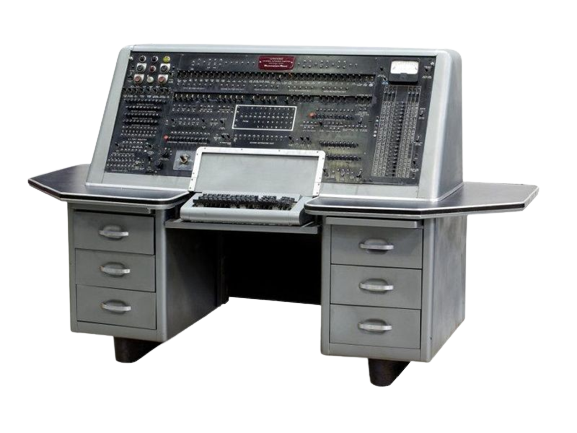
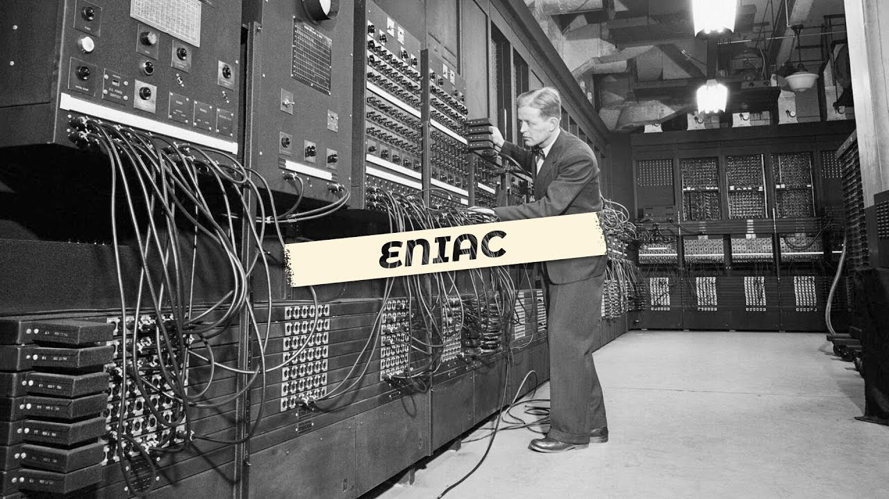
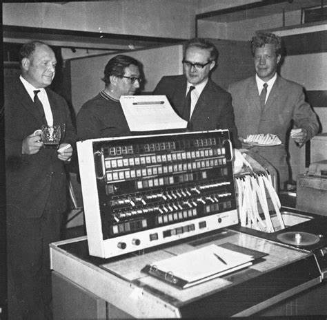
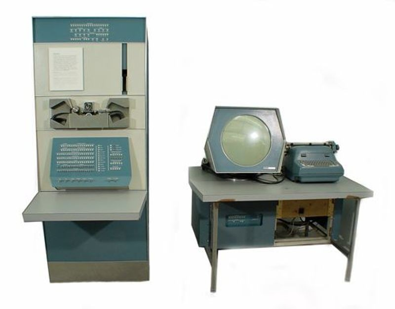
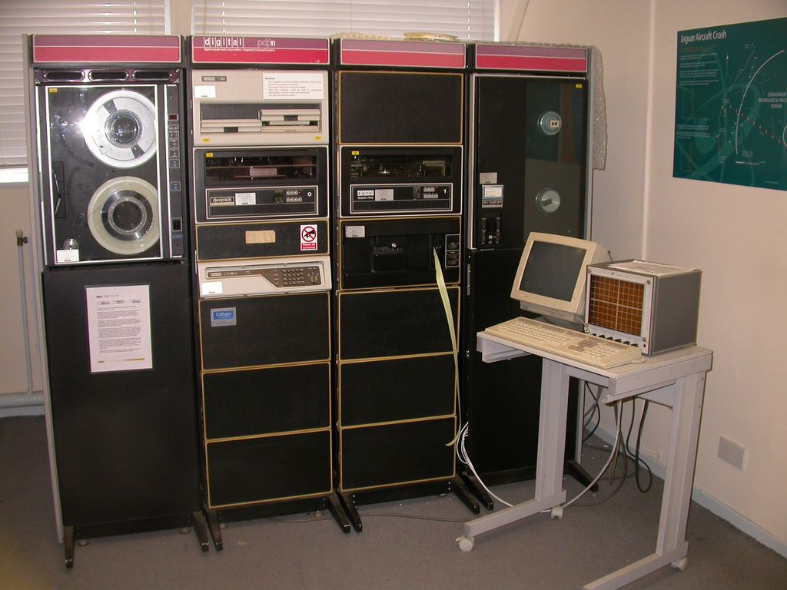
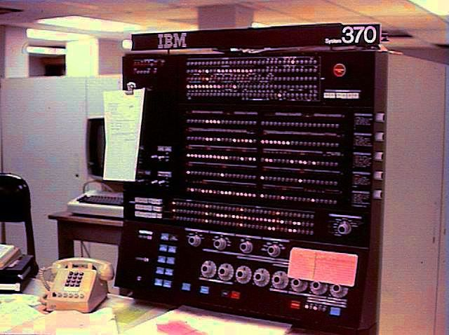
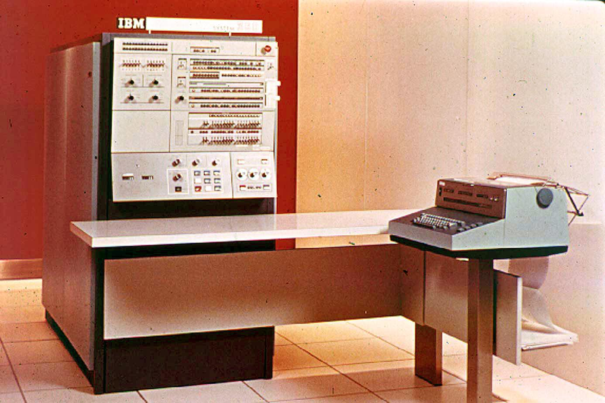
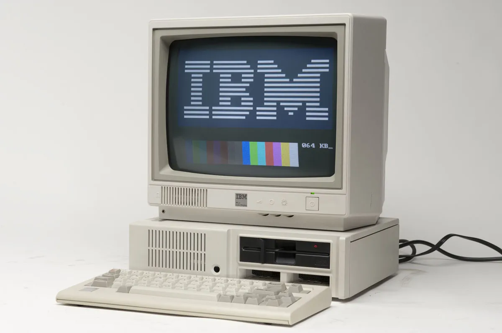
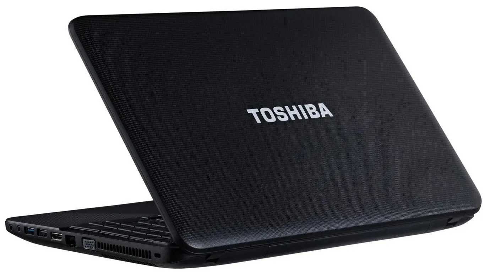
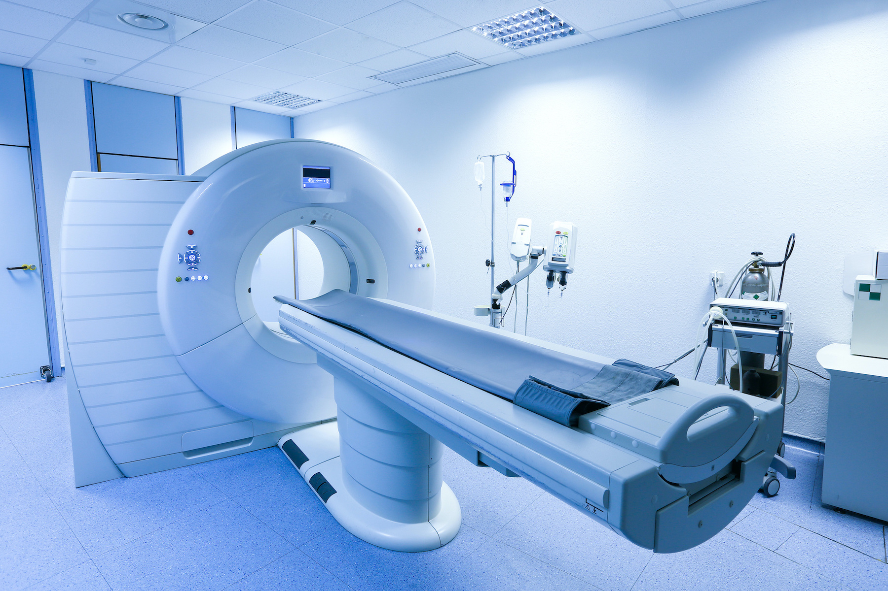

edt 121
edt 121


DEFINITION, CHARACTERISTICS, CLASSIFICATIONS HISTORICAL
DEVELOPMENT OF COMPUTER SYSTEM
BASIC COMPUTING CONCEPTS
A computer can be described as an electronic device that accepts data as input, process the data based on a set of predefined instructions called program to produce the result of these operations as output called information. From this description, a computer can be referred to as an Input-Process-Output (IPO) system, pictorially represented in the figure below:
 Input-Process-Output representation of a Computer
System
Input-Process-Output representation of a Computer
System
Data: Is a piece of basic raw fact, such as a score in examination or the name of a student, for example 55 or Malik respectively. There are three types of data - Numeric, alphabetic, and alphanumeric. Numeric data consists of digits 0 - 9 (e. g. 31), while alphabetic data consist of any of the English language alphabets (e. g. Toyin). An alphanumeric data can consist of a number, an alphabet or a special character, such as a vehicle plate number (e. g. AE 731 LRN).
Information: data as described above contain no meaning, however, when it is transformed into a more meaningful and useful form, it is called information. The transformation process involves a series of operations to be performed by the computer on the raw data that are fed into it. The operation can be arithmetic (such as addition, subtraction, multiplication, and division), logical comparison or character manipulation (as in text processing).
Logical comparison means testing whether one data item is greater than, equal to, or less than another item, and based on the outcome of the comparison, a specified action can be taken. The output of the processing can be in form of reports which can be displayed or printed.
CLASSIFICATION OF COMPUTERS
Computer can be classified into various forms because of the complexity and diversification in its application. In this text, four basic classifications will be adopted. These are classification according to generations, classification according to types, classification according to size and classification according to usage or functions.
Classification according to Generation
The industrial revolution during and after the 2nd world war was fully annexed by the stakeholders in information technology to fully actualize their dreams of having a very reliable computer, hence, the classification of computers into generations. There are five basic generation to which computer can be classified.
First Generation Computer: These were the early computers that were manufactured in 1940's and last till 1950's. The first generation computers were characterized with the use of vacuum tubes as its major components. These vacuum tubes generate enormous heat and consume much electricity. The first generation computers introduce the concept of stored programs. Exclusively, computer experts can program the computer only in machine language, which makes it programmable. Examples are UNIVAC, ENIAC etc

UNIVAC

ENIAC
Second Generation Computer: These were the set of computers that succeeded the first generation computers. Their advent was in early 1950's and the lasted until late 1950's.the components of the second generation of computer were built around transistors which replaces the vacuum tube in the first generation. The resultant effect of the transistors in place of vacuum tube is reduction in size compare with first generation computers, less power consumption, generation of less heat and improved storage facility due to introduction of magnetic devices for storage medium. The overall effects are the improved reliability and introduction of symbolic languages for programming. Examples are ATLAS, IBM 1400 series, PDP I & II etc.

ATLAS

IBM 1400 series

pdp1

pdp11
Third Generation Computer: This generation of computer succeeded the second generation computers. The advent of this generation was between early 1960's to late 1960's. Due to the technological advancement that has taken place in the industrial sector which makes many transistors to be coupled into a single unit component. Hence, the major component that characterized the third generation computer is the Integrated Circuitry (IC), which is a resultant effect of thousands of transistors combined into a single unit component. The integration of transistors into one component makes the computer smaller in size compare with first and second generation computers, faster machine, consume less power and generate less heat. The concept of multi-programming was introduced in this generation of computer. Programming was made easier by the use of high level languages. Examples include: IBM 360/370 series, ICL 1900 series etc.

ibm370

IBM360photo

icl 1900
fourth Generation Computer: The emphasis in the first three generations of computer has been on the development of a computer system that is less expensive, more portable and highly reliable. The fourth generation computers were also developed having in mind the above assertions. These generations of computers were built around Very Large-Scale Integrated Circuitry (VLSI) in which over ten thousand flip-flops were placed in a single silicon chip i.e thousands of ICs were combined into a single chip. These period witness the era of microcomputer with the introduction of microprocessors as its major component. The system came into being in the early 1970's and still in existence till date. Examples include: IBM, COMPAQ 2000 series, Dell series, Toshiba etc.

ibm-pc

COMPAQ 2000

Dell series

Toshiba
Fifth Generation Computer: The development of the fifth generation computers started in the 1980's and classical researches are still going on in this generation of computers. Although, some of these machines are already in use, but a lot of work still need to be done to actualize the reasons for this generation of computer. The objective of this computer system is to build a computer system that mimic the intelligence of human expert in a knowledge domain such as medicine, law, education, criminal investigation, etc. This objective is achieved through the implementation of Artificial Intelligence and Expert Systems development.

criminal investigation technology

med bed technology
Classification According to Types
Computer types can be classified into three. These are Analogue, Digital and Hybrid computers
Analogue Computer: This type of computer deals with quantities that are continuously varying. It measures changes in current, temperature or pressure and translates these data into electrical pulses for processing. Examples are speedometer, electric meter, water meter, thermometer etc.

Digital Computer: This operates on data representation in form of discrete values or digits (e.g 0,1,2,3,X,Y,Z,…). They handle numbers discretely and precisely rather than approximately. These types of computers are very common in use both at home and offices. Examples are calculator digital clock, smartphone, laptop/desktop

Hybrid Computer: These types of computers combine the features of both analogue and digital computers. They handle data in both discrete quantity and variable quantities. They are mostly found in industrial processes for data acquisition and data processing purposes. In most cases, analogue signal generated from the analogue computer needs to be converted to digital signal which has to be processed by the digital computer, hence, the need for Analogue-to-Digital Converter modulator/demodulator (Modem).
